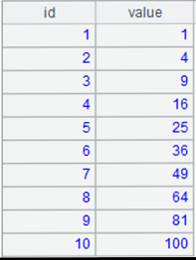
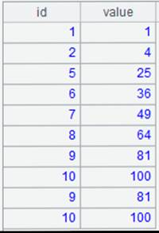

Description:
Perform SG smoothing on each row of a vector or a matrix.
Syntax:
sg(A,n,m,d)
Note:
The external library function (See External Library Guide) performs SG smoothing on each row of vector A or matrix A. The computation gets a number of (m) data points and handles SG smoothing using the nth order curve, during which the number of differentiations is d; will not calculating derivatives when parameter d is absent.
The function returns smoothing result when parameter A has parameters and the smoothing coefficient if A is null.
Parameter:
|
A |
A vector or a matrix. |
|
n |
Degree of a polynomial that satisfies n<m-1. |
|
m |
A set of data points, which is an odd number greater than 1 and will automatically plus 1 if it isn’t an odd number. |
|
d |
The nth order derivative, which satisfies d<n. |
Return value:
Sequence
Example:
|
|
A |
|
|
1 |
[1,4,9,26,30,64,80,99] |
|
|
2 |
=sg(,2,5) |
Return a matrix whose smoothing coefficient is calculated based on 5 points and 2rd order curve. |
|
3 |
=sg(A1,2,5) |
 Perform SG smoothing on A1 based on 5 points and 2rd order curve and return smoothing result. |
|
4 |
=sg(A1,2,5,1) |
 Perform SG smoothing on A1 based on 5 points and 2rd order curve with one differentiation. |